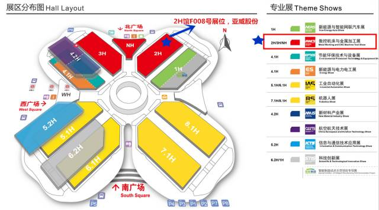
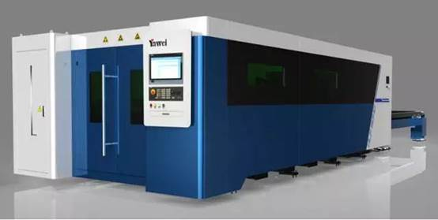
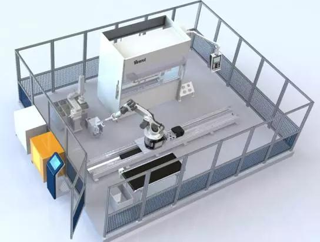
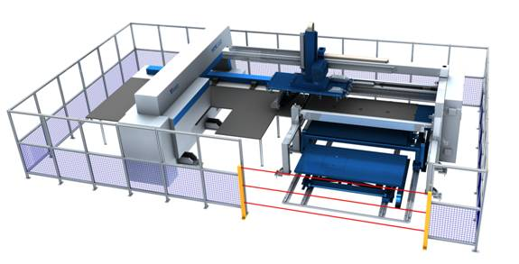

亚威股份璀璨亮相亚洲顶级金属板材加工盛会
2017-10-22 亚威激光装备事业部
点击亚威激光装备事业部关注我哟
☀ 定期推送亚威激光热点资讯、新技术与新工艺、使用及维护等优质内容！关注我们妥妥没错！
作为中国人，不到长城非好汉；
作为钣金人，错过工博必遗憾！
第十九届中国国际工业博览会将于2017年11月7日至11日在国家会展中心（上海）举行，设9大专业展，展会面积28万平方米，超过2500家展商参展，预计逾16万中外专业观众参观。其中数控机床与金属加工展(MWCS2017)，是中国顶尖的国际性机床专业展览会之一，专注于机床、金属板材及管材加工、模具制造、及其相关的最新技术。
届时，亚威股份将携三款机型震撼亮相，恭贺您的莅临参观！
亚威股份展会信息
展位号：2H馆F008号，亚威股份
参展时间：2017年11月7日―11日
展会地点：上海国家会展中心

01
HLF1530高速光纤激光切割机

● 全新外观设计，性能大幅提升，比肩国际水平的新一代高速光纤激光切割机
● 龙门双区床身结构，高强度铝合金横梁，高效率自动交换工作台，生产能力倍增
● 薄板超高速切割，中厚板高效率加工，金属材料加工广泛性更胜一筹
● 尖端的激光技术和先进的数字控制技术深度融合，人性化操作界面与切割专家参数库全面升级
HLF-1530光纤激光切割机是亚威股份历经多年研发和创新，整合国际最前沿激光技术，性价比最高的二维激光切割机；采用龙门双驱床身，经过有限元分析优化的高强度、轻量化横梁设计，重量轻，极低变形，配备德国ALPHA高刚性精密减速机及成套磨削齿轮齿条、日本THK精密直线导轨等高效传动机构，搭载光纤激光器，通过德国SIEMENS原装840Dsl系统，使切割速度更快、效率更高，满足不同行业和客户需求。
02
精密型折弯单元

PBE0102FMC0更加适合小型零件自动折弯需求，自动完成多种复杂零件加工，编程方便、操作快捷。
●亚威在国内的机器人折弯单元应用比较广泛，可为客户提供柔性化的解决方案
● 亚威拥有多系列高精度折弯机，能够匹配高精度机器人，实现高精度机器人折弯单元
●亚威技术团队具有丰富的钣金制作经验，为您提供多种机器人折弯方案，满足您复杂产品、重型产品的加工需求
03
AMS.H-30510数控板料冲压加工系统

板料冲压加工单元整合了冲压加工、上料和出料装置，可自动完成金属板材的冲压加工和堆垛；先进的控制系统将各部分功能单元有效地融合到一起，使得板材加工的效率提升到新的高度。
● 生产时间短；减少准备时间；减少手动辅助操作和加工；减少劳动力
● 零件精度高
● 增加板材利用率;高效套裁;标准板材尺寸
做国际一流的激光装备及解决方案服务商
亚威60多年制造经验沉淀，现代化精益生产管理，国际一流的供应商战略合作，全生命周期服务，尽解您后顾之忧。
长按二维码，关注亚威激光装备事业部